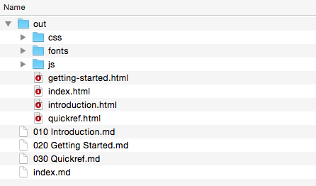

Creating a simple doc site
The following recipe will work in any github project repo. It assumes pub-server installed globally. This new site uses pub-theme-doc and a flat list of pages. No configuration is required to get started.
Create a doc folder
$ mkdir doc
$ cd doc
# create some .md files - english names ok - index.md is the root
# use a numeric prefix for extra control over the order
$ touch "index.md"
$ touch "010 Introduction.md"
$ touch "020 Getting Started.md"
$ touch "030 Quickref.md"
$ pub
Preview the site structure
Browse to http://localhost:3001 and check the urls for each of the pages.

Name the root page and edit your markdown
To specify a name for the root page, add a header and title to index.md. Leave a blank line after the header.
---- / ----
name: Root page title
# Root page text
Edit content for each of the files. The other pages don't require extra headers since they inherited their names from filenames.
pub -O to generate into ./out

This folder can be transferred to a static hosting service like github pages. Website css and js files are included, and generated files have .html extensions.
pub -S out to preview the new static website in ./out